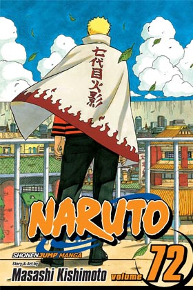

One Piece - Volumen 96
Una historia épica de piratas, donde narra la historia de "Monkey D. Luffy" quien cuado tenia 7 años, comió accidentalmente una "Akuma no mi"(Futa del diablo) la cual le dio poderes de goma. Por otra parte "Gol D. Roger" conocido como "El rey de los Piratas" quien fuera ejecutado por la Marine, habló antes de morir, acerca de su famoso tesoro "One Piece" escondido en la "Gran line". Esta noticia desato la gran era de la piratas lanzando a incontables piratas a ese lugar, en busca de "One Piece" el tesoro perdido.

Naruto Shippuden - Volumen 72
Pasados dos años y medio de entrenamiento con Jiraiya, Naruto Uzumaki regresa a la aldea oculta de la hoja, donde se reúne con sus viejos amigos y conforma de nuevo el Equipo 7. Debido a la ausencia de Sasuke, aparece un nuevo personaje llamado Sai el cual retoma su lugar. En esta secuela podremos notar como los compañeros de Naruto han madurado con respecto a su desempeño previo, mejorando la mayoría de estos en su nivel. Durante su entrenamiento con Jiraiya, Naruto aprendió a controlar un poco del chakra del Kyubi.